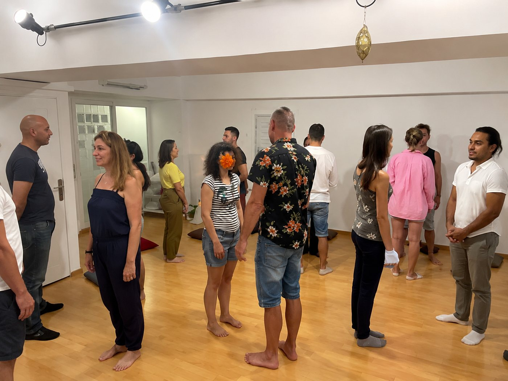

El grupo hace lo que
la sesión no puede.
Talleres vivenciales de un día o fin de semana. Retiros de 4-5 días en entorno natural. Grupos reducidos. Trabajo experiencial real.
"En el grupo aparecen cosas que en la sesión individual no tienen espacio. El grupo amplifica, confronta y sostiene de una manera distinta."
Del dolor a la alegría
Un día de trabajo intensivo con las emociones como herramienta. Ejercicios experienciales, movimiento y trabajo corporal grupal. Para personas que quieren contactar con lo que normalmente evitan.
El personaje que te está matando
Versión presencial del trabajo sobre el personaje. Dos días para ver con claridad qué mecanismo lleva años tomando decisiones por ti. Ejercicios de confrontación grupal.
Reservar plaza →Crisis e identidad
Dos días para trabajar qué pasa cuando la vida que construiste ya no encaja. Para personas en transición o con sensación persistente de estar en el lugar equivocado.
Más información →
Retiro terapéutico en Cataluña
Retiro intensivo en entorno natural. Silencio, trabajo grupal, sesiones individuales y convivencia. Para personas que necesitan un corte real y un espacio de profundidad que el día a día no da.
Grupos de máximo 8 personas. El tamaño reducido hace posible un nivel de trabajo que en grupos grandes no existe.
Consultar próximas fechas →
Grupos de desarrollo personal
Grupos semanales de trabajo personal continuado. No son clases ni talleres puntuales. Son un proceso grupal a lo largo del tiempo, donde la continuidad y el conocimiento entre los participantes profundiza el trabajo.
Actualmente en 4ª promoción. Plazas muy limitadas.
Consultar plaza →No hace falta estar en terapia para venir.
Los talleres y retiros son espacios propios. No requieren haber trabajado antes con Sergio. El grupo tiene su propia dinámica, distinta a la sesión individual.
Son para personas que quieren trabajar en profundidad en un contexto grupal. Que quieren ver cómo se relacionan, cómo reaccionan, qué les mueve cuando están con otros.
Próximas fechas.
Las fechas se publican con antelación por WhatsApp y redes sociales.
Si quieres que te avise cuando haya nuevas fechas, escríbeme directamente.
No publico más de 3 talleres al año.
Déjame tu WhatsApp →